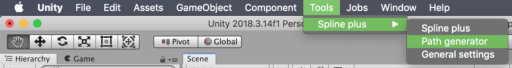
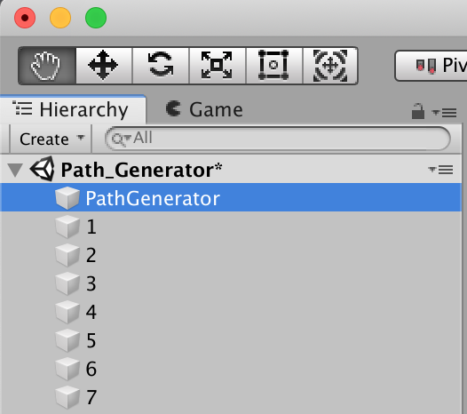
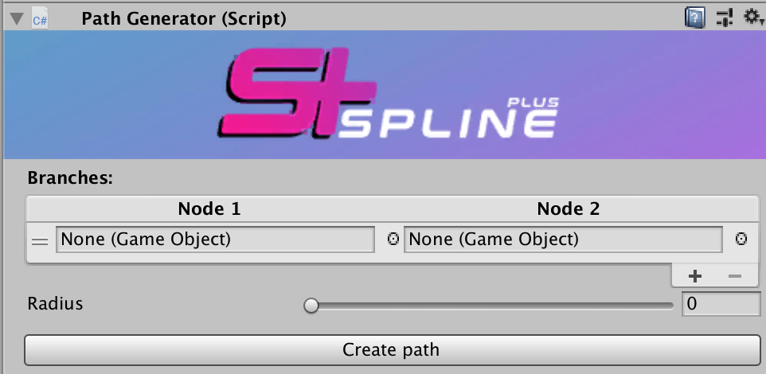
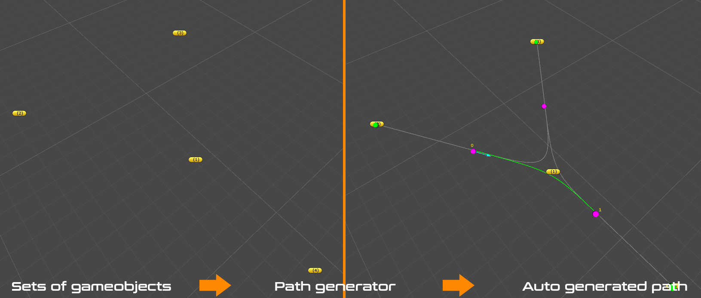

Path Generator
This is a straightforward subtool to auto generate complex splines in no time, all you have to do is to provide the game objects to the Path generator and click create and your path will be served in no time
You can access path generator from here

When clicked you will get a new game object added to your scene hierarchy like bellow

The inspector of the PathGenerator game object will resemble to something like this

| Variables | Description |
|---|---|
| Branches list | this will allow you to add, delete, reoganize your branches |
| Radius | This is where you can control the chamfering of your shared nodes |
| Create path | This generates the final path , it creates a gameObject in your hierarchy with a spline plus component holding the data. |
Here is an example of the generation of a path based on game object placed in scene view
